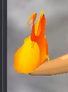

Not exactly what the original was, but I think I’m liking it.

The shader, if anyone wants it (it’s basically just Unlit.glsl)
#include "Uniforms.glsl"
#include "Samplers.glsl"
#include "Transform.glsl"
#include "ScreenPos.glsl"
#include "Fog.glsl"
// Based on Unlit.glsl
varying vec2 vTexCoord;
varying vec4 vWorldPos;
#ifdef VERTEXCOLOR
varying vec4 vColor;
#endif
varying float vHeight;
varying vec3 vNormal; // So we can only change the color towards the edge of the model
varying float vNdotV; // Camera to world pos
varying float vNdotY;
void VS()
{
mat4 modelMatrix = iModelMatrix;
vec3 worldPos = GetWorldPos(modelMatrix);
gl_Position = GetClipPos(worldPos);
vTexCoord = GetTexCoord(iTexCoord);
vWorldPos = vec4(worldPos, GetDepth(gl_Position));
vNormal = GetWorldNormal(modelMatrix);
vec3 cameraDir = normalize(worldPos - cCameraPos);
vNdotV = dot(cameraDir,normalize(vNormal));
vNdotY = vNormal.y;
#ifdef VERTEXCOLOR
vColor = iColor;
#endif
vHeight = iPos.y;
}
void PS()
{
// Get material diffuse albedo
#ifdef DIFFMAP
#ifdef SHELL
float h = cElapsedTimePS;
#else
float h = 0;
#endif
vec4 diffColor = cMatDiffColor * //texture2D(sDiffMap, vTexCoord + vec2(0,2.5*cElapsedTimePS));
min(texture2D(sDiffMap, vTexCoord + vec2(h,2.5*cElapsedTimePS)) + texture2D(sSpecMap, vTexCoord + vec2(1.3*h,3*cElapsedTimePS)),vec4(1.0,1.0,1.0,1.0));
#ifdef ALPHAMASK
if (diffColor.a < 0.5)
discard;
#endif
#ifdef REDMASK
if (diffColor.r < 0.9) // With 0.5 we get some dark lines at the edges of the flame threads
discard;
#endif
#else
vec4 diffColor = cMatDiffColor;
#endif
vec3 normal = normalize(vNormal);
diffColor.g += vHeight*10;
#ifdef SHELL
diffColor.g = 0.9*pow(1 - pow(vNdotV,2),0.9);
#else
diffColor.g = mix(0.7,1.0,vNdotY)*pow(1 - vTexCoord.x*pow(vNdotV,2),0.9);
#endif
// diffColor.g = pow(1 - vTexCoord.x*abs(vNdotV),1);
diffColor.b = 0;//abs(vNdotV); //normal.z;
// diffColor.rgb = abs(vec3(vNdotV,0,max(vNdotY,0)));//0.5-0.5*normal;
#ifdef VERTEXCOLOR
diffColor *= vColor;
#endif
// Get fog factor
#ifdef HEIGHTFOG
float fogFactor = GetHeightFogFactor(vWorldPos.w, vWorldPos.y);
#else
float fogFactor = GetFogFactor(vWorldPos.w);
#endif
#if defined(PREPASS)
// Fill light pre-pass G-Buffer
gl_FragData[0] = vec4(0.5, 0.5, 0.5, 1.0);
gl_FragData[1] = vec4(EncodeDepth(vWorldPos.w), 0.0);
#elif defined(DEFERRED)
gl_FragData[0] = vec4(GetFog(diffColor.rgb, fogFactor), diffColor.a);
gl_FragData[1] = vec4(0.0, 0.0, 0.0, 0.0);
gl_FragData[2] = vec4(0.5, 0.5, 0.5, 1.0);
gl_FragData[3] = vec4(EncodeDepth(vWorldPos.w), 0.0);
#else
gl_FragColor = vec4(GetFog(diffColor.rgb, fogFactor), diffColor.a);
#endif
}